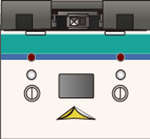
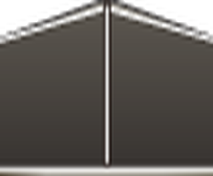
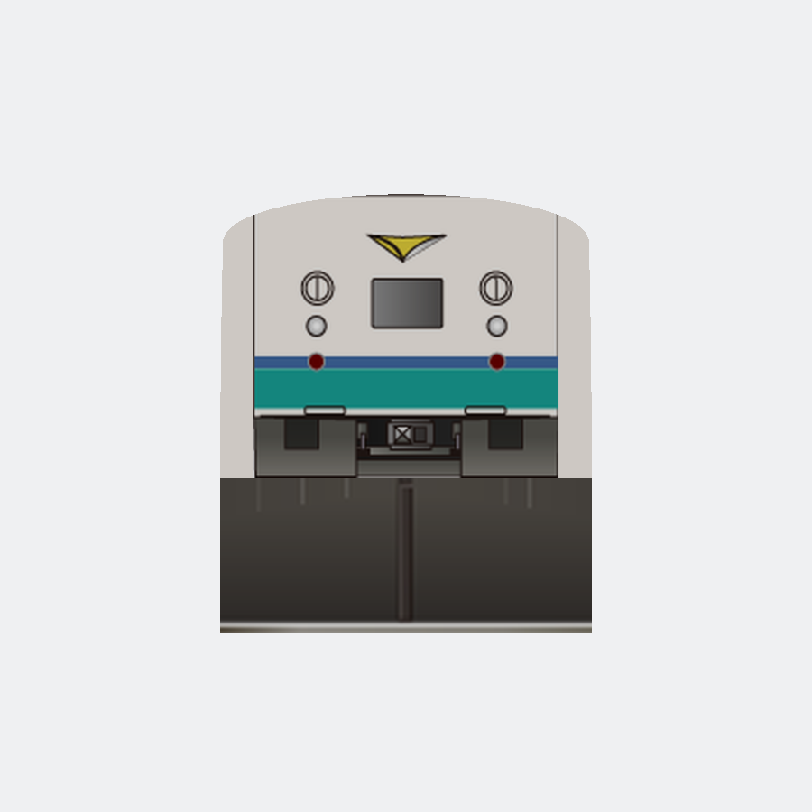
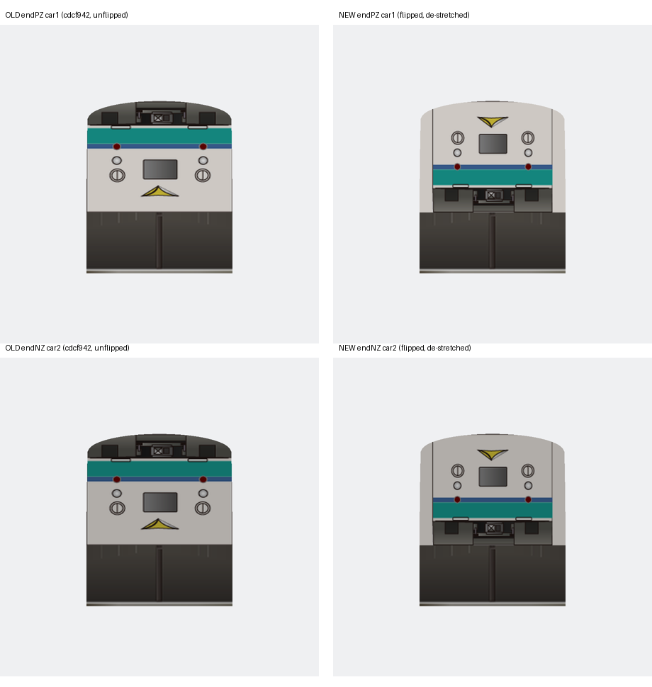

🚃 jr-east-485：司机室图片下面那块黑的是什么
结论一句话：黑的那块是裙板，图纸上本来就是深灰棕色的独立纸片，不是我们贴上去的黑块。脸和裙板是图纸上两张分开的纸片，脸那张只盖司机室脸，裙板那张就是深色的。下面是两张原图裁切＋实测数据。
1️⃣ 图纸上的两张纸片（原图直接裁切，未改动）
图纸文件 jr_east_485_1500_hakutyo.pdf，内嵌原图 1241×1755 px（xref 44，无矢量、无文字，整页就是一张图）。

① 司机室脸原图（红框处，x680–835、y257–401，155×144 px，2× 放大）：灰顶带、奶油线、青绿带、蓝细条＋红点、奶油脸、两对圆灯、灰空行先框、黄▲。实测均色 RGB (163, 179, 175)。

② 裙板原图（蓝框处，x262–371、y326–371，109×45 px，4×/8× 放大）：深灰棕色底裙，顶缘两个白三角（胶耳）、中间白竖线（折线）、底部白横条（金属条）。实测均色 RGB (102, 99, 94)。
两张纸片在图纸上的位置（红框＝脸，蓝框＝裙板，两处不相连）：

图纸全图（已缩小）。脸在右上方，裙板在左下方，中间隔着车身侧面等其他纸片——图纸上就没有一张从车顶盖到轨面的整脸纸片。
2️⃣ 为啥不能把脸那张盖满整个车头
| 项目 | 数值 |
|---|
| 脸原图尺寸 | 155×144 px，宽高比 1.08 |
| 脸在模型上覆盖的范围 | 车高 1.23–3.48 m（高 2.25 m），宽 2.42 m（重做后占面宽 82%，两侧奶油边） |
| 整面车头尺寸 | 宽 2.95 m × 高 3.48 m，宽高比 0.85 |
| 裙板在模型上覆盖的范围 | 车高 0–1.23 m（高 1.23 m，占车头高 35%） |
| 用脸原图盖满整面车头的变形 | 横向拉 21.7%＋竖向拉 54.7%，净纵横比 distortion 约 27%（脸会被拉得又瘦又长，灯变椭圆、▲ 变尖） |
脸原图的宽高比（1.08）和整面车头的宽高比（0.85）本来就不一样。硬盖满，脸一定变形——这正是 14:06“不要压缩拉伸”的红线不允许的。裙板那 1.23 米不是脸原图的一部分，是图纸上另一张独立纸片。
⚠️ 更正：上条微信说的“竖向硬拉约 55%”是竖向拉伸的绝对值（3.48/2.25−1）；净变形（纵横比歪的程度）是约 27%。以本页算法为准。
3️⃣ 现在车头上的样子（重做后，commit cfb6ffa）

重做后端面渲染（已按 14:12 确认翻转：灰顶带在下、黄▲在上；拉伸 21.7%→0%）。脸是奶油色，下面深灰色那段就是裙板原图贴出来的——颜色和图纸裙板纸片一致。
新旧对比（左：重做前 cdcf942 未翻转；右：重做后 cfb6ffa 已翻转＋去拉伸）：

两版裙板完全一样（都没动过裙板）。变的只有脸：翻转＋去拉伸。
4️⃣ 要不要改，由你定
- 裙板颜色、高度都是按图纸原片来的，实车车头下面本来也是深色底裙/车钩那一块。
- 如果你觉得裙板不该这么黑、这么大，我就让组里按你的意思改（比如改浅、改矮），但那就是偏离图纸了，你一句话。
- 如果你要 ▲ 尖朝上（现在翻完是 ▼ 形），得重画 ▲，红线下不能程序画，也要你定。
证据来源：图纸 jr_east_485_1500_hakutyo.pdf 内嵌原图 xref 44（1241×1755）；裁切坐标与均色实测见上；模型提交 cfb6ffa（models-pipeline）；页面提交见 jr3d-audit。2026-11-28。